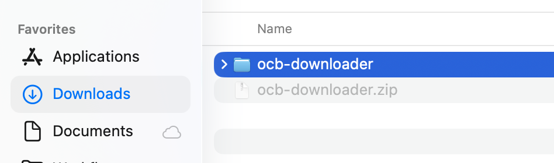
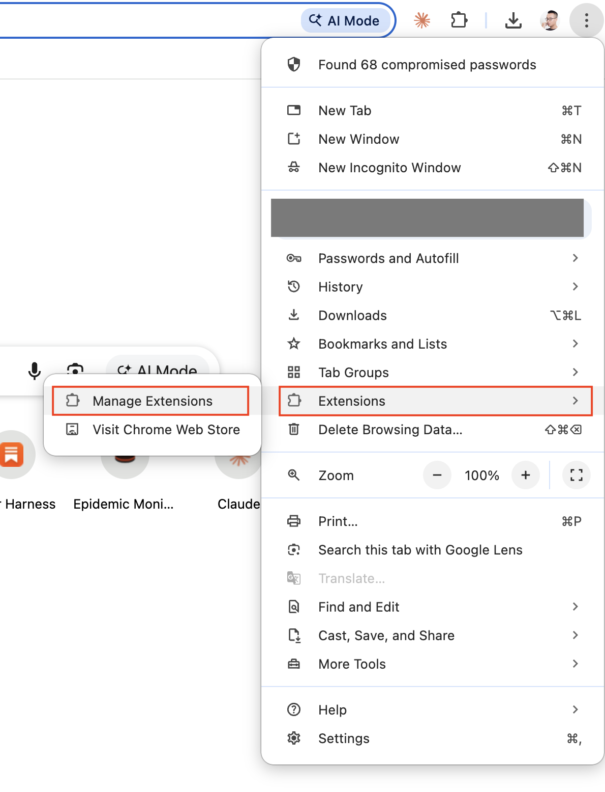
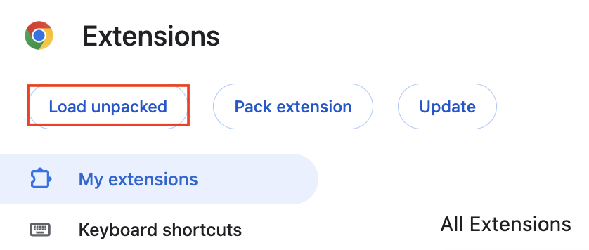
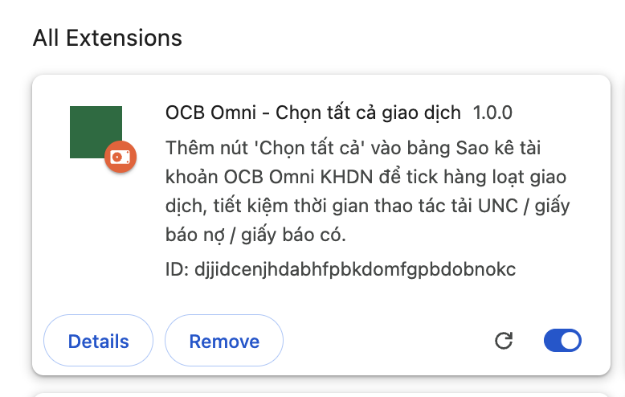
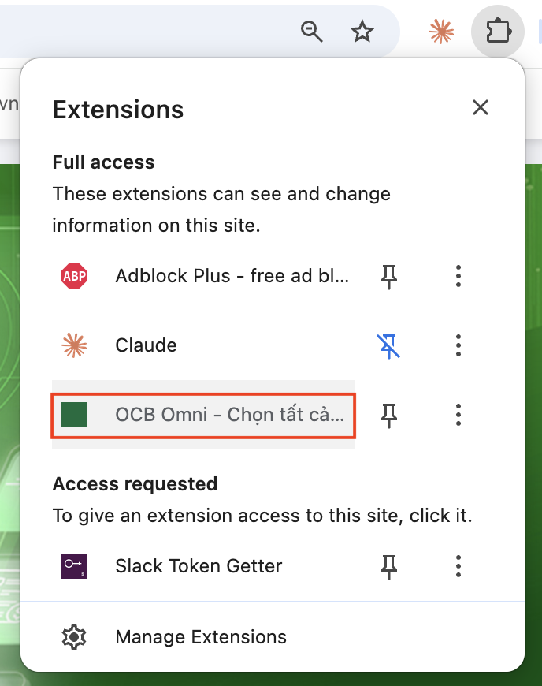
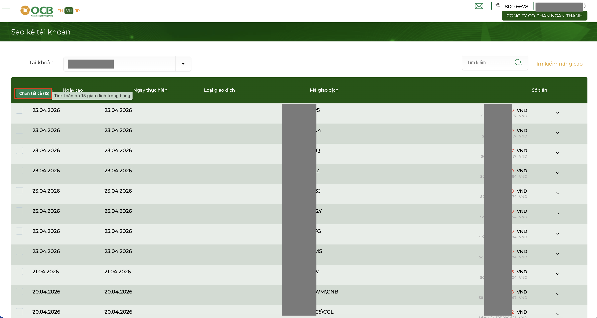
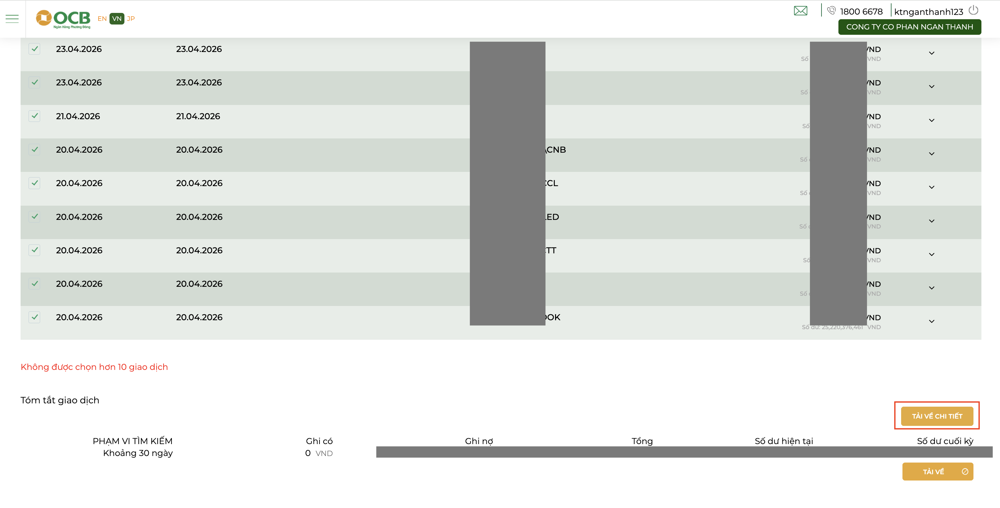
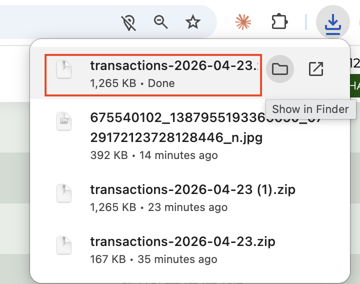

Giải quyết vấn đề gì?
OCB Omni chỉ cho tick từng dòng giao dịch rồi mới tải UNC được — với 14 tài khoản × ~200 dòng/tháng thì thao tác thủ công cực kỳ tốn thời gian. Extension này lấp đúng chỗ trống đó.
1 click tick toàn bộ
Thêm nút "Chọn tất cả (N)" vào header bảng sao kê, tick đủ mọi giao dịch đang hiển thị.
Riêng tư 100%
Chỉ chạy trên trang OCB của bạn, không gửi dữ liệu đi đâu cả, không cần đăng nhập thêm.
Siêu nhẹ
Chỉ ~5KB, không cần Node/build. Cài 1 lần dùng mãi, tự kích hoạt mỗi khi vào OCB Omni.
Không phá trang gốc
Chỉ can thiệp đúng bảng có cột "Mã giao dịch". Các chức năng khác của OCB giữ nguyên.
Cài đặt (5 phút, làm 1 lần duy nhất)
Không cần lập trình — chỉ cần tải ZIP, giải nén, load vào Chrome.
Tải file ZIP
Bấm nút bên dưới để tải ocb-downloader.zip về máy (vào thư mục Downloads).
Giải nén ZIP
Mở thư mục Downloads → double-click file ocb-downloader.zip
→ sẽ xuất hiện một thư mục tên ocb-downloader ngay cạnh file zip.

Mở trang Extensions của Chrome
Bấm vào icon 3 chấm (góc trên phải Chrome) → Extensions → Manage Extensions.
Hoặc gõ thẳng vào thanh địa chỉ: chrome://extensions rồi Enter.

Bật Developer mode và Load unpacked
Ở góc trên bên phải trang Extensions, bật công tắc Developer mode → sẽ hiện nút Load unpacked.
Bấm Load unpacked → chọn thư mục ocb-downloader
đã giải nén ở bước 2.

Xác nhận đã cài thành công
Nếu thấy thẻ OCB Omni - Chọn tất cả giao dịch xuất hiện trong danh sách extensions và công tắc bật xanh — thành công rồi.

(Khuyến nghị) Ghim extension lên thanh công cụ
Bấm icon mảnh ghép trên thanh Chrome → tìm OCB Omni - Chọn tất cả → bấm icon đinh ghim bên cạnh để luôn hiển thị.

Cách dùng hàng tháng
Quy trình tải UNC/Giấy báo theo lô — từ đầu đến file .zip chứa PDF.
Vào trang Sao kê tài khoản
- Đăng nhập OCB Omni KHDN
- Menu Thông tin tài khoản → Sao kê tài khoản
- Chọn tài khoản + khoảng thời gian → bấm Tìm kiếm
Bấm nút xanh "Chọn tất cả (N)" ở header bảng
Extension tự thêm nút Chọn tất cả (N) ngay góc trái trên header bảng giao dịch. Bấm 1 lần để tick toàn bộ các dòng đang hiển thị.

Chọn tất cả (X/N) — bấm để tick hết phần còn lại.Bấm nút vàng "TẢI VỀ CHI TIẾT"
Sau khi đã tick, kéo xuống khung Tóm tắt giao dịch phía dưới bảng. Bấm nút vàng TẢI VỀ CHI TIẾT ở góc phải.

Chrome tự tải file ZIP chứa PDF
File transactions-YYYY-MM-DD.zip sẽ được tải xuống. Giải nén ra →
mỗi giao dịch là 1 file PDF UNC / Giấy báo Nợ / Giấy báo Có.

Câu hỏi thường gặp
❓ Extension có an toàn không?
An toàn. Source code công khai trên GitHub.
Extension chỉ chạy trên domain omnicorp.ocb.com.vn, không gửi dữ liệu đi đâu, không đọc mật khẩu,
không can thiệp các trang khác.
❓ Sao không thấy nút "Chọn tất cả" hiện ra?
- Kiểm tra đã vào đúng trang Sao kê tài khoản và đã bấm Tìm kiếm chưa.
- Kiểm tra extension đã bật (công tắc xanh ở
chrome://extensions). - Thử reload trang (Cmd/Ctrl + R).
❓ Tick xong mà "TẢI VỀ CHI TIẾT" vẫn mờ không bấm được?
Có thể do bảng phân trang quá nhiều dòng. OCB giới hạn tối đa 10 giao dịch / lượt tải. Nếu có > 10 giao dịch, chia thành nhiều lượt: tick 10 dòng đầu → tải → bỏ tick → tick 10 dòng tiếp theo → tải.
❓ Có tự động bấm "TẢI VỀ CHI TIẾT" luôn không?
Không. Extension chủ ý dừng ở bước tick để user tự kiểm tra lại trước khi tải — an toàn hơn.
❓ Cập nhật phiên bản mới thế nào?
- Tải ZIP mới từ Releases.
- Giải nén đè lên thư mục cũ (hoặc xóa cũ, tạo mới).
- Vào
chrome://extensions→ bấm icon 🔄 trên thẻ extension.